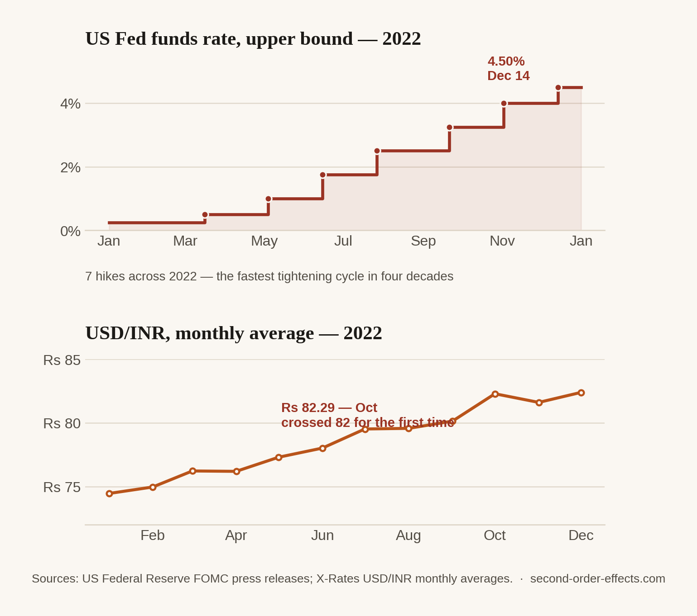

The Fed Sneezes, Emerging Markets Catch Cold: Chasing the Rupee to 80
Six interest rate hikes in Washington in a single year, and the rupee crossed 80, then 82, to the dollar for the first time in its history. On the mechanics of how a rate decision becomes a remittance receipt.
In September 2022, the Indian rupee opened at a record low of 80.28 to the US dollar. A month later it crossed 82 — also a first — closing out the year down close to 11% against the dollar. India didn't cause any of this. The proximate cause sat eight thousand miles away, in Washington, where the Federal Reserve raised interest rates six times in 2022, its most aggressive tightening cycle in four decades, chasing inflation that had almost nothing to do with India at all.
Why a rate hike in Washington moves a currency in Mumbai
The mechanism is more mechanical than it sounds. When the Fed raises rates, US Treasury bonds start paying more interest, essentially risk-free, in the world's reserve currency. That makes the dollar more attractive to any investor holding money anywhere else on earth — including the investors who had previously parked money in Indian equities or bonds specifically because they paid a better yield. As US rates climbed, some of that capital did exactly what capital does: it moved toward the safer, better-paying option. Investors sold rupee-denominated assets, converted the proceeds to dollars, and the resulting swing in demand — more dollars wanted, fewer rupees — pushed the exchange rate against India. Nobody had to dislike India for this to happen. They just had to notice that Washington now paid better.
This gets called the "risk-free rate" problem, and it's worth understanding as a structural feature of how emerging markets relate to US monetary policy, not a one-off accident. When the world's largest, most liquid economy makes its own currency and debt more attractive, it pulls capital away from smaller, less liquid markets almost automatically. 2022 stacked a second force directly on top of this: the same global uncertainty pushing the Fed to act aggressively was also pushing investors everywhere toward safe-haven assets in general, so the pressure on the rupee was arriving from two directions in the same twelve months.

What an 11% depreciation actually does
A weaker rupee isn't automatically bad — a cheaper currency helps exporters, and I've seen that side of it directly. But for a country that imports as large a share of its energy as India does, currency depreciation compounds the same oil and gas shocks covered elsewhere on this site, rather than sitting next to them. Crude oil is priced and settled in dollars. If the dollar price of crude stays perfectly flat but the rupee weakens 11% against the dollar, India's oil import bill in rupee terms still rises by roughly that 11%, on top of whatever the dollar price of oil did on its own. A commodity shock and a currency shock don't add. They multiply.
A decision made in a marble building in Washington, aimed entirely at US inflation, changes what a rupee is worth on a remittance receipt eight thousand miles away — without a single Indian policymaker in the room.
The version I actually noticed
This is the article where the mechanism stopped being theoretical for me. Since 2023 I've helped manage a slice of my family's investment portfolio, spread across equities, fixed income, and gold, and 2022's Fed cycle is a large part of why I started paying close attention to how those three assets actually move together, instead of assuming they diversify each other the tidy way a textbook promises. When the risk-free rate moves that hard, correlations that normally hold quietly stop holding, and you learn that by watching a portfolio in real time, not by reading about it after the fact. USD/INR became a number I checked the way some people check the weather — not because I trade currencies day to day, but because it quietly decides how far money and returns actually go once they cross between the two economies I live and work between.
Sources
- Business Standard — rupee hits new low as Fed turns hawkish
- Zee Business — year-ender on 2022 rupee depreciation
- Business Standard — rupee at record low, analyst outlook
- Chart data compiled from US Federal Reserve FOMC press releases (2022) and X-Rates USD/INR monthly averages.
Comments